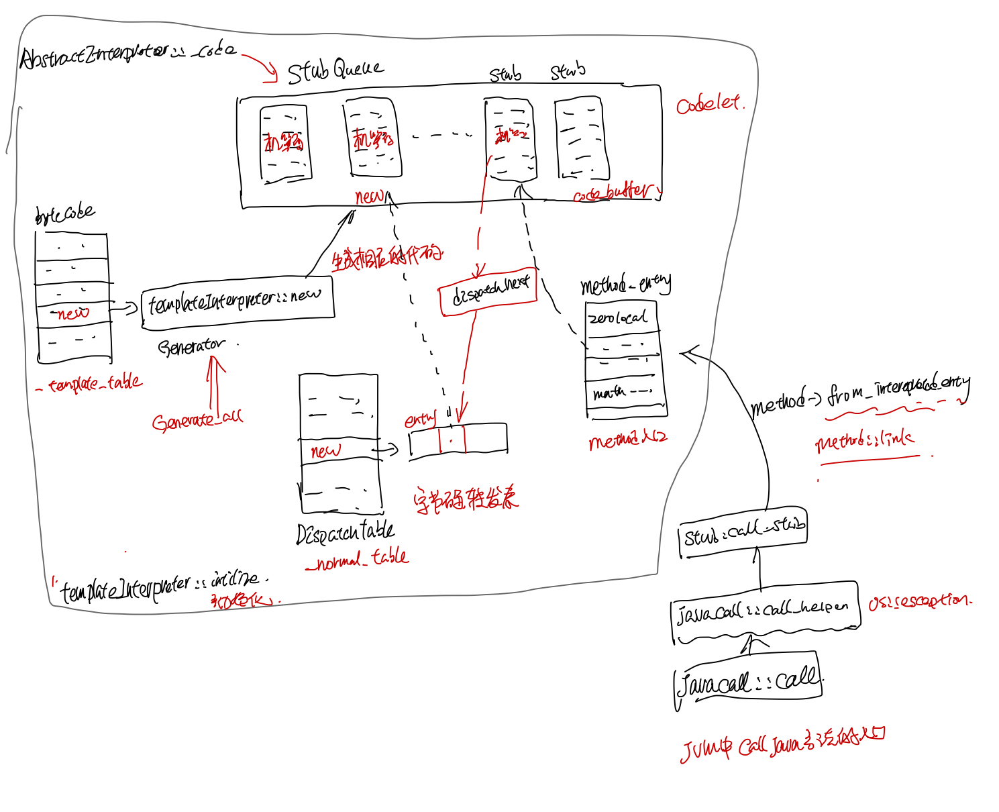

Hotspot代码研读: class文件的加载和执行
摘要
本文首先描述了Helloworld.class文件的结构，然后分析了HelloWorld这个在Java中的类在hotpos jvm对应的instanceKlass实例。然后具体分析了HelloWorld中的static main函数字节码， 以及它被加载以后在JVM中存放的位置。之后描述了字节码解释器TemplateInterpreter初始化过程, 最后分析了static main这个java 代码入口函数被调用的过程, 以及new这个字节码执行的时候具体做了哪些工作。
HelloWorld.class 字节码分析
这里先准备一个HelloWord.java，main函数里面new了一个HelloWorld对象，然后调用了该对象的一个成员函数hello方法。
public class HelloWorld {
String m_name;
int m_age = 0;
public static void main(String[] args) {
HelloWorld obj = new HelloWorld();
obj.hello();
}
private void hello(){
m_age ++;
System.out.println("hello, world");
}
}
编译完之后，可以用如下命令查看生成的class二进制文件, 包括常量池和方法的字节码。
$javac HelloWorld.java
$javap -v HelloWorld >HelloWorld-javap
class文件包含两部分，一部分是常量池，另外一部分是方法对应的字节码。常量池包含了这个class中涉及到的字符串，字面常量，methodref, classRef等各种引用。
Constant pool:
#1 = Methodref #9.#23 // java/lang/Object."<init>":()V
#2 = Fieldref #3.#24 // HelloWorld.m_age:I
#3 = Class #25 // HelloWorld
#4 = Methodref #3.#23 // HelloWorld."<init>":()V
....
#10 = Utf8 m_name
#11 = Utf8 Ljava/lang/String;
下面HelloWorld.class的方法有三个，<init>":()V对应着HelloWorld的构造函数，还有main, hello这两个函数，下面主要看下HelloWorld main方法生成的字节码。new之后，做了一个dup(dup的原因是因为后面调用构造函数需要消耗一个，赋值操作也需要消耗一个)，调用了helloWorld的构造函数，对obj做了赋值, 最后调用了hello方法之后就返回了。
public static void main(java.lang.String[]);
descriptor: ([Ljava/lang/String;)V
flags: ACC_PUBLIC, ACC_STATIC
Code:
stack=2, locals=2, args_size=1
0: new #3 // class HelloWorld
3: dup
4: invokespecial #4 // Method "<init>":()V
7: astore_1
8: aload_1
9: invokespecial #5 // Method hello:()V
12: return
LineNumberTable:
line 6: 0
line 7: 8
line 8: 12
}
在hotspot的vm/interpreter/bytecodes.hpp中定义了一个字节码table，可查到上面各个指令对应的字节码值如下：
_new = 187, // 0xbb
_dup = 89, // 0x59
_invokespecial = 183, // 0xb7
_astore_1 = 76, // 0x4c
_aload_1 = 43, // 0x2b
_invokespecial = 183, // 0xb7
_return = 177, // 0xb1
使用vim编辑HelloWorld.class 这块对应的二进制文件(从bb开头)如下:

HelloWorld.class的加载
在HotSpot中由ClassFileParser负责解析class文件，并创建Class对应的instanceKlass实例，首先在vm/classfile/classFileParser.cpp中加入一段代码判断时候是HelloWorld.class的方法, 以方便打断点~~
InstanceKlass* ClassFileParser::create_instance_klass(bool changed_by_loadhook, TRAPS) {
if ( _klass != NULL) {
return _klass;
}
InstanceKlass* const ik =
InstanceKlass::allocate_instance_klass(*this, CHECK_NULL);
fill_instance_klass(ik, changed_by_loadhook, CHECK_NULL);
//新加的代码，以在加载HelloWorld.class的时候才打断点
if (ik->_name->index_of_at(0, "HelloWorld", strlen("HelloWorld")) != -1){
assert(_klass == ik, "invariant");
}
//other code
}
__
然后准备的lldb调试脚本如下：
file /codes/openjdk/build/macosx-x86_64-normal-server-slowdebug/jdk/bin/java
settings set frame-format "frame #${frame.index}: ${line.file.basename}:${line.number}: ${function.name}\n"
#breakpoints
breakpoint set --name main
breakpoint command add
process handle SIGSEGV --notify false --pass true --stop false
continue
DONE
breakpoint set --file classFileParser.cpp --line 5229
breakpoint command add
print *ik
print ik->_methods->_data[0]->name_and_sig_as_C_string()
memory read ik->_methods->_data[0]->_constMethod->code_base() -c `ik->_methods->_data[0]->_constMethod->code_size()`
print ik->_methods->_data[1]->name_and_sig_as_C_string()
memory read ik->_methods->_data[1]->_constMethod->code_base() -c `ik->_methods->_data[1]->_constMethod->code_size()`
print ik->_methods->_data[2]->name_and_sig_as_C_string()
memory read ik->_methods->_data[2]->_constMethod->code_base() -c `ik->_methods->_data[2]->_constMethod->code_size()`
DONE
run -Xint HelloWorld
最后HelloWorld.main对应的的调试lldb输出如下:
(lldb) print ik->_methods->_data[2]->name_and_sig_as_C_string()
(char *) $7 = 0x0000000101002d30 "HelloWorld.main([Ljava/lang/String;)V"
(lldb) memory read ik->_methods->_data[2]->_constMethod->code_base() -c `ik->_methods->_data[2]->_constMethod->code_size()`
0x121faab00: bb 00 03 59 b7 00 04 4c 2b b6 00 05 b1 �..Y�..L+�..�
通过上面的lldb调试可以看到，对于java中的HelloWorld这个类，hotspot创建了一个对应的InstanceKlass实例（假定为ik), ik->_methods中包含了helloworld中的方法。 HelloWorld中的方法对应的字节码, 保存在ik->_methods->_data[i]->_constMethod->code_base()指向保存它的字节码的内存，然后``ik->_mehods->_data[i]->_constMethod->_consts, 都指向了这个HelloWorld.class中对应的常量池。ConstPool->_tags这个数组标明了每个常量的类型（比如methodref对应这JVM_CONSTANT_Methodref,等等)
callstack 分析
通过callstack可以看到, 一个class的加载要通过下面的流程。SystemDictionary负责保存已经loadedclass的一个map, 如果mapl里面有了，就直接返回，如果没有，就调用classLoader去加载class文件，最后用klassFactory从class文件中创建出InstanceKlass来。
Class.c --> SystemDictionary --> ClassLoader --> klassFactory --> classFileParser-->Inputstream --> HelloWorld.class文件
frame #0: classFileParser.cpp:5229: ClassFileParser::create_instance_klass
frame #1: klassFactory.cpp:203: KlassFactory::create_from_stream
frame #2: systemDictionary.cpp:1142: SystemDictionary::resolve_from_stream
...
frame #5: ClassLoader.c:150: Java_java_lang_ClassLoader_defineClass1
...
frame #21: systemDictionary.cpp:1586: SystemDictionary::load_instance_class
...
frame #24: systemDictionary.cpp:185: SystemDictionary::resolve_or_fail
...
frame #27: Class.c:135: Java_java_lang_Class_forName0
....
frame #38: java.c:1543: LoadMainClass
frame #39: java.c:477: JavaMain
InstanceKlass的link
常量池中符号的resolve, method的link. //TODO
Interpreter
在上面加载class的callstack中可以看到有几段的callstack是机器码， 那些是TemplateInterpreter初始化的时候，生成的StubCode(机器代码), java的字节码就是在StubCode中按字节码解释执行（或者直接编译好机器码，直接跑的)~~。
frame #27: Class.c:135: Java_java_lang_Class_forName0
frame #28: 0x000000010602c838 0x000000010602c838
frame #29: 0x000000010600b220 0x000000010600b220
frame #30: 0x000000010600b220 0x000000010600b220
frame #31: 0x000000010600b220 0x000000010600b220
frame #32: 0x00000001060009f1 0x00000001060009f1
frame #33: javaCalls.cpp:410: JavaCalls::call_helper
frame #34: os_bsd.cpp:3682: os::os_exception_wrapper
frame #35: javaCalls.cpp:306: JavaCalls::call
JavaCalls::call 这个是从jvm中调java方法的入口。可以在跑代码的时候加个-XX:+PrintInterpreter选项打印这些生成的studecode的代码。
StubQueue的创建
在hotspot中有三种解释器：TemplateInterpreter，CppInterprete 还有遗留的bytecodeInterpreter。默认用的是TemplateInterpreter，TemplateInterpreter在初始化的时候会把字节码对应的执行代码通过MASM直接转对应平台(比如X86， X86-64)对应的机器代码, 这部分的机器码作为一个个Stub保存在StubQueue中，除了字节码, method_entry也会生成一个个的stub。 生成Stub的callstack如下：
* frame #0: templateInterpreterGenerator.cpp:57: TemplateInterpreterGenerator::generate_all()
frame #1: templateInterpreterGenerator.cpp:40: TemplateInterpreterGenerator::TemplateInterpreterGenerator(StubQueue*)
frame #2: templateInterpreterGenerator.cpp:37: TemplateInterpreterGenerator::TemplateInterpreterGenerator(StubQueue*)
frame #3: templateInterpreter.cpp:56: TemplateInterpreter::initialize()
frame #4: interpreter.cpp:116: interpreter_init()
frame #5: init.cpp:115: init_globals()
frame #6: thread.cpp:3623: Threads::create_vm(JavaVMInitArgs*, bool*)
frame #7: jni.cpp:3938: JNI_CreateJavaVM_inner(JavaVM_**, void**, void*)
frame #8: jni.cpp:4033: ::JNI_CreateJavaVM(JavaVM **, void **, void *)
frame #9: java.c:1450: InitializeJVM
frame #10: java.c:402: JavaMain
分配StubQueue内存
在TemplateInterpreter::initialize中，首先会去申请一块内存，存放stubcode, 然后下面TemplateInterpreterGenerator的代码都会保存到这块内存里面。
//TemplateInterpreter::initialize
// generate interpreter
{ ResourceMark rm;
TraceTime timer("Interpreter generation", TRACETIME_LOG(Info, startuptime));
int code_size = InterpreterCodeSize;
NOT_PRODUCT(code_size*=4;) // debug uses extra interpreter code space
_code = new StubQueue(new InterpreterCodeletInterface, code_size, NULL,
"Interpreter");
TemplateInterpreterGenerator g(_code);
}
__
code_size 和各个平台是相关的，比如x86平台, 大小为224K。
hotspot/src/cpu/x86/vm/templateInterpreterGenerator_x86.cpp
58:int TemplateInterpreter::InterpreterCodeSize = JVMCI_ONLY(268) NOT_JVMCI(256) * 1024;
60:int TemplateInterpreter::InterpreterCodeSize = 224 * 1024;
生成字节码对应的 stub
在set_entry_points_for_all_bytes里面，会遍历所有的bytecode，根据预先创建好的_template_table（这个表是在TemplateTable::initialize初始化的时候创建的）去生成字节码对应的code。比如字节码_new生成stubcode时候的callstack如下:
frame #0: templateTable_x86.cpp:3830: TemplateTable::_new()
frame #1: templateTable.cpp:63: Template::generate(InterpreterMacroAssembler*)
frame #2: templateInterpreterGenerator.cpp:396: TemplateInterpreterGenerator::generate_and_dispatch(Template*, TosState)
frame #3: templateInterpreterGenerator_x86.cpp:1814: TemplateInterpreterGenerator::set_vtos_entry_points(Template*, unsigned char*&, unsigned char*&, unsigned char*&, unsigned char*&, unsigned char*&, unsigned char*&, unsigned char*&, unsigned char*&, unsigned char*&)
frame #4: templateInterpreterGenerator.cpp:364: TemplateInterpreterGenerator::set_short_entry_points(Template*, unsigned char*&, unsigned char*&, unsigned char*&, unsigned char*&, unsigned char*&, unsigned char*&, unsigned char*&, unsigned char*&, unsigned char*&)
frame #5: templateInterpreterGenerator.cpp:329: TemplateInterpreterGenerator::set_entry_points(Bytecodes::Code)
frame #6: templateInterpreterGenerator.cpp:285: TemplateInterpreterGenerator::set_entry_points_for_all_bytes()
frame #7: templateInterpreterGenerator.cpp:263: TemplateInterpreterGenerator::generate_all()
生成字节码对应的stub的函数如下，这里的_gen这个generate就是TemplateInterpreter::_new了。 masm最后的flush会把机器码都flush到StubQueue那边分配的buffer中。
void Template::generate(InterpreterMacroAssembler* masm) {
// parameter passing
TemplateTable::_desc = this;
TemplateTable::_masm = masm;
// code generation
_gen(_arg);
masm->flush();
}
字节码的stub生成完之后，interpreter会有个_normal_table 保存对这些bytecode对应的stubcode的引用, 这儿entry的一堆参数代表了寄存器， 在dispatch_next中会用到这个表。
EntryPoint entry(bep, zep, cep, sep, aep, iep, lep, fep, dep, vep);
Interpreter::_normal_table.set_entry(code, entry);
dispatch_next中会去取bytecode对应stubcode的地址，然后在dispatch_base中jmp到字节码对应的code去执行。
void InterpreterMacroAssembler::dispatch_next(TosState state, int step) {
// load next bytecode (load before advancing _bcp_register to prevent AGI)
load_unsigned_byte(rbx, Address(_bcp_register, step));
// advance _bcp_register
increment(_bcp_register, step);
dispatch_base(state, Interpreter::dispatch_table(state));
}
__
method entry
hotspot中给java的method分了好几类，这样对不同种类的method可以做专门的优化, 比如针对java_lang_math_sin这些常用的数学函数，对应的method entry就直接是sin的汇编代码了。
Method entry的种类定义在了AbstractInterpreter::MethodKind中，通常用的都是zerolocals, 同步的method入口就是zerolocals_synchronized这个了，相应的还有native, native_synchronized， native的方法。部分的methodKind如下:
zerolocals, // method needs locals initialization
zerolocals_synchronized, // method needs locals initialization & is synchronized
native, // native method
native_synchronized, // native method & is synchronized
empty, // empty method (code: _return)
accessor, // accessor method (code: _aload_0, _getfield, _(a|i)return)
abstract, // abstract method (throws an AbstractMethodException)
method_handle_invoke_FIRST, // java.lang.invoke.MethodHandles::invokeExact, etc.
java_lang_math_sin, // implementation of java.lang.Math.sin (x)
method entry定义如下：
#define method_entry(kind) \
{ CodeletMark cm(_masm, "method entry point (kind = " #kind ")"); \
Interpreter::_entry_table[Interpreter::kind] = generate_method_entry(Interpreter::kind); \
Interpreter::update_cds_entry_table(Interpreter::kind); \
}
__
对于zerolocals_synchronized和zerolocals对应的入口是: generate_normal_entry 生成的stubcode, 可以看到, zerolocals_synchronized多了调了一个lock_method, 而且调用了dispatch_next jmp到bytecode对应的stubcode.
// address TemplateInterpreterGenerator::generate_normal_entry(bool synchronized) {
const Address constMethod(rbx, Method::const_offset());
const Address access_flags(rbx, Method::access_flags_offset());
const Address size_of_parametersrdx,
const Address size_of_locals(rdx, ConstMethod::size_of_locals_offset());
// get parameter size (always needed)
__ movptr(rdx, constMethod);
//other code
if (synchronized) {
// Allocate monitor and lock method
lock_method();
}
//other code
__ notify_method_entry();
//other code
__ dispatch_next(vtos);
//other code
native方法入口generate_native_entry 生成部分如下, 最终会去call native的方法。
//address TemplateInterpreterGenerator::generate_native_entry(bool synchronized)
// allocate space for parameters
__ get_method(method);
__ movptr(t, Address(method, Method::const_offset()));
__ load_unsigned_short(t, Address(t, ConstMethod::size_of_parameters_offset()));
//other code
__ call(t);
__ get_method(method); // slow path can do a GC, reload RBX
//other code
method::link
这个entry_table中的入口最后会在instancKlass中method::link的时候和method关联起来。
//method::link代码片段
address entry = Interpreter::entry_for_method(h_method);
set_interpreter_entry(entry);
//native functions
if (is_native() && !has_native_function()) {
set_native_function(
SharedRuntime::native_method_throw_unsatisfied_link_error_entry(),
!native_bind_event_is_interesting);
}
//设置method的入口
void set_interpreter_entry(address entry) {
assert(!is_shared(), "shared method's interpreter entry should not be changed at run time");
if (_i2i_entry != entry) {
_i2i_entry = entry;
}
if (_from_interpreted_entry != entry) {
_from_interpreted_entry = entry;
}
}
TemplateInterpreter初始画之后，各个table之前的关系图如下:
HelloWorld的static main的执行
经过上面的分析，再来看java代码中main被执行过程，首先在JavaMain中加载main class，然后获得class的static main method, 最后调用了这个static method，开始执行HelloWorld.class的Main method。
//JavaMain 代码片段
mainClass = LoadMainClass(env, mode, what);
//...some other code
mainID = (*env)->GetStaticMethodID(env, mainClass, "main",
"([Ljava/lang/String;)V");
//...some other code
(*env)->CallStaticVoidMethod(env, mainClass, mainID, mainArgs);
这里先不管LoadMainClass的过程， 主要分析CallStaticVoidMethod这个方法。首先准备下面的lldb调试脚本, 在JavaMain 执行CallStaticVoidMethod之前打个断点，然后再在JavaCalls::call_helper中打个断点。
#just a line before (*env)->CallStaticVoidMethod(env, mainClass, mainID, mainArgs);
breakpoint set --file java.c --line 517
breakpoint command add
breakpoint set --method JavaCalls::call_helper
continue
DONE
可以看到callstack如下
* frame #0: javaCalls.cpp:360: JavaCalls::call_helper(JavaValue*, methodHandle const&, JavaCallArguments*, Thread*)
frame #1: os_bsd.cpp:3682: os::os_exception_wrapper(void (*)(JavaValue*, methodHandle const&, JavaCallArguments*, Thread*), JavaValue*, methodHandle const&, JavaCallArguments*, Thread*)
frame #2: javaCalls.cpp:306: JavaCalls::call(JavaValue*, methodHandle const&, JavaCallArguments*, Thread*)
frame #3: jni.cpp:1120: jni_invoke_static(JNIEnv_*, JavaValue*, _jobject*, JNICallType, _jmethodID*, JNI_ArgumentPusher*, Thread*)
frame #4: jni.cpp:1990: ::jni_CallStaticVoidMethod(JNIEnv *, jclass, jmethodID, ...)
frame #5: java.c:518: JavaMain
JavaCalls::call_helper
在JavaCalls::call_helper中关键代码片段如下， 首先设置好method的entry point， 这个entry point就是上文中所说的interpreter初始化的时候建立的method entry point（两者之间连接是在method::link的时候建立的）。
//JavaCalls::call_helper代码片段
//设置entry point
address entry_point = method->from_interpreted_entry();
if (JvmtiExport::can_post_interpreter_events() && thread->is_interp_only_mode()) {
entry_point = method->interpreter_entry();
}
//other code
// do call
{ JavaCallWrapper link(method, receiver, result, CHECK);
{ HandleMark hm(thread); // HandleMark used by HandleMarkCleaner
StubRoutines::call_stub()(
(address)&link,
// (intptr_t*)&(result->_value), // see NOTE above (compiler problem)
result_val_address, // see NOTE above (compiler problem)
result_type,
method(),
entry_point,
args->parameters(),
args->size_of_parameters(),
CHECK
);
result = link.result(); // circumvent MS C++ 5.0 compiler bug (result is clobbered across call)
// Preserve oop return value across possible gc points
if (oop_result_flag) {
thread->set_vm_result((oop) result->get_jobject());
}
}
//保存执行结果：
if (oop_result_flag) {
result->set_jobject((jobject)thread->vm_result());
thread->set_vm_result(NULL);
}
call_stub
这个call_stub也是一段汇编代码（定义在StubGenerator_x86_X64.cpp:203由generate_call_stub生成）它在保存好一堆寄存器和栈之后，就把用到的参数都压到寄存器里面，然后调method的entry point去执行，执行完了再把寄存器和栈恢复了。
其中的call Java function部分的汇编代码如下：
// call Java function
__ BIND(parameters_done);
__ movptr(rbx, method); // get Method*
__ movptr(c_rarg1, entry_point); // get entry_point
__ mov(r13, rsp); // set sender sp
BLOCK_COMMENT("call Java function");
__ call(c_rarg1);
BLOCK_COMMENT("call_stub_return_address:");
return_address = __ pc();
JavaCallWrapper
在JavaCallWrapper的构造函数中，会申请一个新的JNIHandleBlock，并把它设置为thread的active_handles，在析构函数中会恢复线程之前的JNIHandleBlock，并释放之前申请的JNIHandleBlock。
线程自身维护一个free_handle_block的list， 申请JNIHandleBlock的时候，就从这里面去取，如果freelist用完了，才回去加个mutex lock new一个JNIHanleBlock。释放的时候，就放回到这个list里面。
很多的java code都会去调用vm/prims/jvm.cpp中的JVM_ENTRY，而JVM_ENTRY会用JNIHanleBlock->make_local保存返回给java代码的的结果。在java code跑完以后,由JavaCallWrapper的destructor负责释放这些内存。
jobject JNIHandles::make_local(Thread* thread, oop obj) {
if (obj == NULL) {
return NULL; // ignore null handles
} else {
assert(Universe::heap()->is_in_reserved(obj), "sanity check");
return thread->active_handles()->allocate_handle(obj);
}
}
bytecode对应的代码
hotspot默认用的是TemplateInterpreter把字节码对应的代码直接生成汇编代码，读起来比较难。hotspot中还有一个bytecodeInterpreter，这个完全是用cpp写的，两者从逻辑上看起来没区别。所以看每个bytecode对应的代码可以从bytecodeInterpreter入手。
new
java中的new 一个class 有两个path： 一个是fastpath: class对应的instanceKlass已经解析，初始化好了，这种比较快，另外一种是 slowpath需要去掉interpreter的runtime 去link, init这个klass, 然后把它放到constpoll的cache里面， 然后分配内存。
在heap堆或者thread的localstorage上分配内存， 设置好oop的 mark head,还有iklass指针，iklass指向在jvm中代表该java类的instanceKlass。
首先判断instanceklass是否已经加载了并且初始化了
ConstantPool* constants = istate->method()->constants();
if (!constants->tag_at(index).is_unresolved_klass()) {
// Make sure klass is initialized and doesn't have a finalizer
Klass* entry = constants->slot_at(index).get_klass();
InstanceKlass* ik = InstanceKlass::cast(entry);
if (ik->is_initialized() && ik->can_be_fastpath_allocated() ) {
如果要求useTLAB的话，就分配在thread localstorage上
size_t obj_size = ik->size_helper();
if (UseTLAB) {
result = (oop) THREAD->tlab().allocate(obj_size);
}
否则从heap上分配
HeapWord* compare_to = *Universe::heap()->top_addr();
HeapWord* new_top = compare_to + obj_size;
if (new_top <= *Universe::heap()->end_addr()) {
if (Atomic::cmpxchg_ptr(new_top, Universe::heap()->top_addr(), compare_to) != compare_to) {
goto retry;
}
result = (oop) compare_to;
}
然后就是初始化这块内存了，设置好对象的markhead和kclass指针, 最后把它放到栈上。
if (need_zero ) {
HeapWord* to_zero = (HeapWord*) result + sizeof(oopDesc) / oopSize;
obj_size -= sizeof(oopDesc) / oopSize;
if (obj_size > 0 ) {
memset(to_zero, 0, obj_size * HeapWordSize);
}
}
if (UseBiasedLocking) {
result->set_mark(ik->prototype_header());
} else {
result->set_mark(markOopDesc::prototype());
}
result->set_klass_gap(0);
result->set_klass(ik);
// Must prevent reordering of stores for object initialization
// with stores that publish the new object.
OrderAccess::storestore();
SET_STACK_OBJECT(result, 0);
UPDATE_PC_AND_TOS_AND_CONTINUE(3, 1);
对于slowcase回去调用interpreterRuntime::_new去创建对象
CALL_VM(InterpreterRuntime::_new(THREAD, METHOD->constants(), index),
handle_exception);
// Must prevent reordering of stores for object initialization
// with stores that publish the new object.
OrderAccess::storestore();
SET_STACK_OBJECT(THREAD->vm_result(), 0);
THREAD->set_vm_result(NULL);
UPDATE_PC_AND_TOS_AND_CONTINUE(3, 1);
___